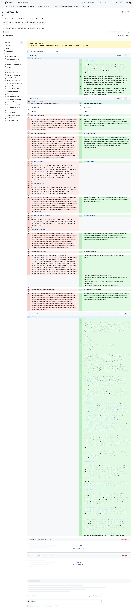
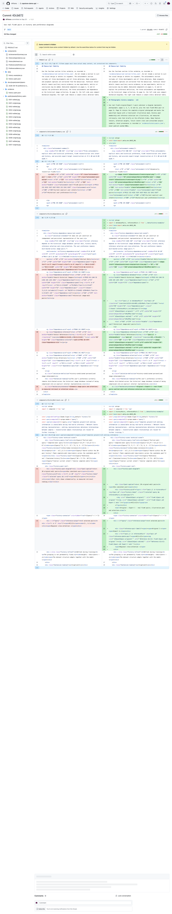
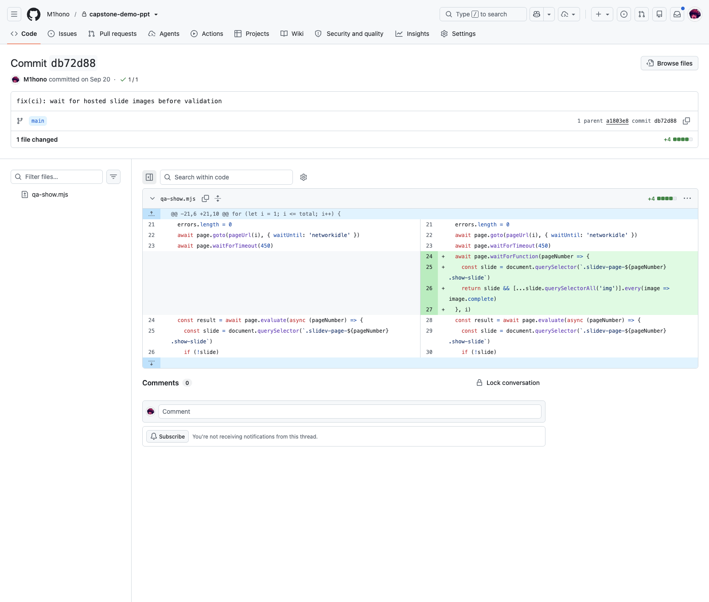

Final Flow5 presentation delivery
The published presentation revision that brings the English report narrative, interactive mechanism pages and populated evidence views together.
A compact record of the source-controlled work behind the final Flow5 presentation: reusable mechanism components, real FiveK evidence, and browser delivery checks.
Each image is populated; no placeholder frame is used.

The published presentation revision that brings the English report narrative, interactive mechanism pages and populated evidence views together.
Component-level evidence for the interactive explanation layer used to make the model narrative inspectable during review.

Source-controlled preparation of attributable original and edited FiveK pairs for the history and preference views.

Delivery checks wait for hosted slide images before inspecting rendered pages, supporting reliable visual review.
Presentation engineering, evidence preparation and delivery quality: the work is traceable to source history, populated image assets and browser checks.
Model checkpoints, a complete final held-out experiment bundle, or a claim of sole ownership of the team’s neural-network training.